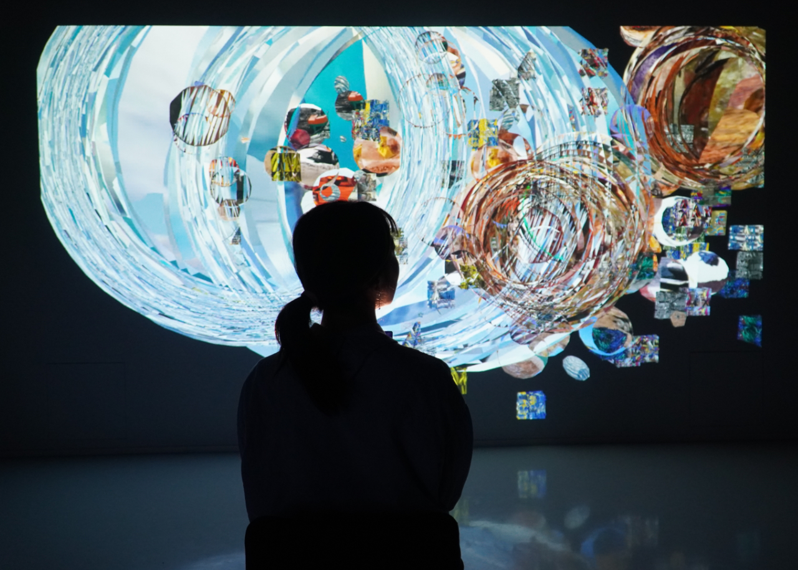
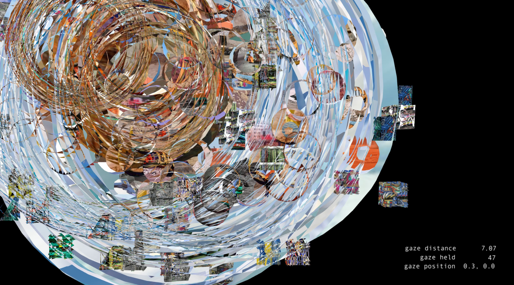
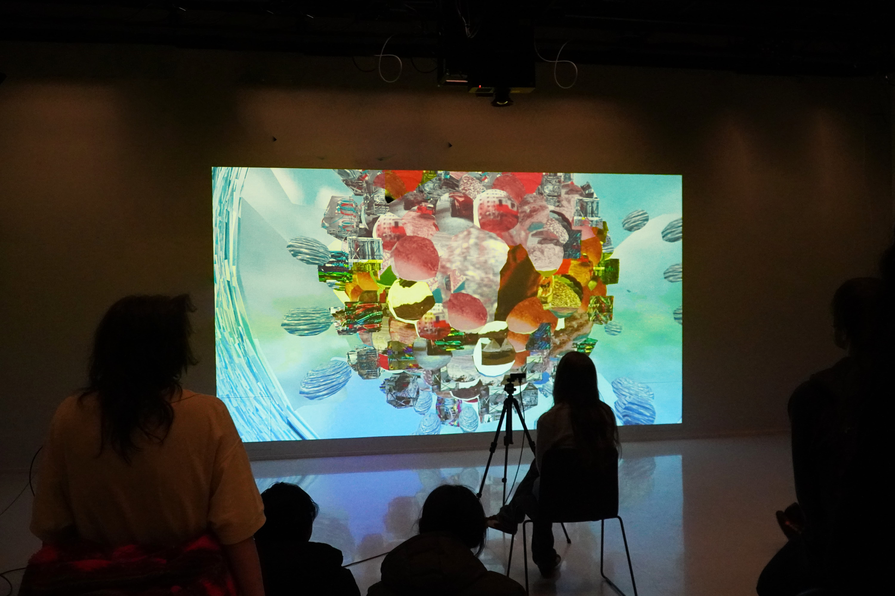
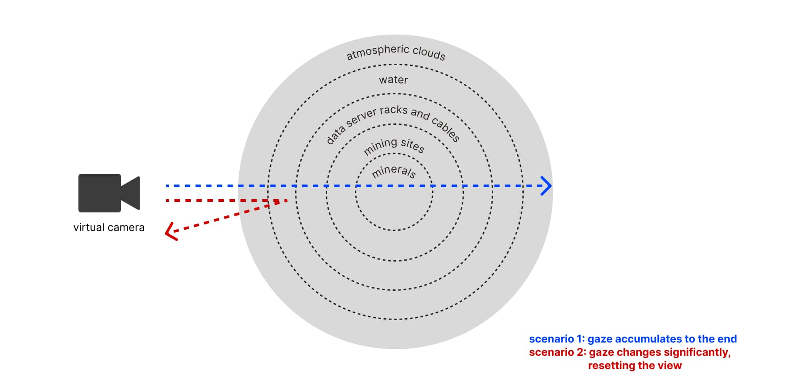

A viewer is gazing at the installation.
Gazing at the Cloud is an interactive video installation that uses real-time gaze-tracking to explore the hidden physical infrastructure behind the digital cloud. As a viewer holds their gaze steady, the installation responds by slowly opening a sphere of layered imagery sourced from ImageNet, moving inward from atmospheric clouds through water, data center cables, mining sites, and the raw minerals that make up our digital infrastructure. The piece treats these images not as static archives but as matter in motion, with hundreds of particles drifting and entangling the longer the gaze holds.
Built in TouchDesigner using an OAK-D Pro camera for gaze-tracking and plugdata for sound, the work pairs visual layering with a sonic shift from clean, synthetic textures toward heavier, industrial sounds as the viewer looks deeper. But sustained attention doesn't reward the viewer with clarity. The imagery becomes more tangled the deeper it goes, until the camera eventually passes through the entire sphere and arrives back at the cloud's abstracted surface. Rather than offering a complete map of the cloud's infrastructure, the work proposes something more partial and reflexive: a record of the attempt to see, shaped by the limits of any single gaze.
This is an ongoing project, currently in development with planned additions including a real-time gaze statistics panel and a sculptural housing for the camera that resembles an eyeball, extending the installation's central image of mutual looking between viewer and machine.

The statistics on the corner show the position and direction of the gaze.

Gazing at the Cloud demoed in Experimental Studio at Aalto University, Helsinki, Finland.

A diagram of five layers of images that the work holds.